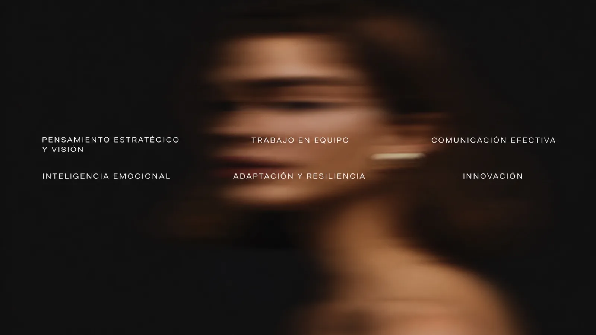

¿Sigues liderando con las reglas del siglo pasado? Entonces tienes un problema.
El mundo ha cambiado. La tecnología avanza a una velocidad vertiginosa, los equipos son más diversos que nunca y las personas ya no siguen a quien tiene el cargo, sino a quien inspira de verdad. El liderazgo del siglo XXI no va de mandar: va de influir, conectar y transformar.
Después de más de 30 años acompañando a líderes y profesionales en su desarrollo, he identificado 6 cualidades que marcan la diferencia entre un jefe y un verdadero líder. Si diriges un equipo, un negocio o simplemente quieres liderar tu propia vida con más consciencia, este artículo es para ti.
1. Pensamiento estratégico y visión
Un líder sin visión es como un barco sin timón: se mueve, pero no llega a ningún puerto.
El líder del siglo XXI no se limita a resolver los problemas del día a día. Define un propósito claro que da sentido a cada decisión, anticipa tendencias futuras antes de que se conviertan en urgencias y se enfoca en resultados a largo plazo, sin perder de vista el presente.
En el sector de la estética y la belleza, por ejemplo, esto significa dejar de gestionar tu centro "apagando fuegos" y empezar a construir una estrategia que te posicione donde quieres estar dentro de tres o cinco años.
Pregúntate: ¿Tengo claro hacia dónde voy, o simplemente estoy reaccionando a lo que viene?
2. Inteligencia emocional
Esta es, sin duda, una de las competencias más poderosas y a la vez más subestimadas del liderazgo actual.
La inteligencia emocional implica desarrollar autoconciencia y autocontrol —saber qué sientes y gestionar esas emociones antes de que te gestionen a ti—, cultivar la empatía genuina con tu equipo y fomentar relaciones positivas que generen confianza y compromiso.
No se trata de ser "blanda" o "blando". Se trata de ser inteligente en la forma en que te relacionas. Un líder emocionalmente inteligente sabe cuándo escuchar, cuándo confrontar y cuándo dar espacio. Y eso transforma equipos enteros.
Pregúntate: ¿Cómo reacciono cuando algo no sale como esperaba? ¿Mi equipo se siente seguro para expresarse conmigo?
3. Trabajo en equipo y colaboración
Los tiempos del líder que lo hace todo solo se acabaron. El liderazgo moderno es, por definición, colaborativo.
Esto significa construir equipos diversos donde las diferencias sumen en lugar de restar, fomentar la participación activa para que cada persona sienta que su voz importa y delegar responsabilidades con confianza, no como un acto de abandono, sino como un acto de empoderamiento.
He visto demasiados profesionales agotados porque creen que si no lo hacen ellos, no se hace bien. Soltar el control no es perder el liderazgo; es multiplicarlo.
Pregúntate: ¿Estoy delegando de verdad o solo repartiendo tareas?
4. Adaptabilidad y resiliencia
Si algo nos enseñaron los últimos años es que la capacidad de adaptarse no es opcional: es una cuestión de supervivencia profesional.
El líder resiliente abraza el cambio constantemente en lugar de resistirse a él, aprende de los fracasos extrayendo lecciones en lugar de culpas y se recupera de las dificultades con más fuerza y claridad.
La resiliencia no significa que no te afecten las cosas. Significa que, cuando te caes, sabes levantarte. Y cuando todo cambia, encuentras la oportunidad dentro del caos.
Pregúntate: ¿Qué me enseñó la última crisis que atravesé? ¿Lo integré o simplemente lo sobreviví?
5. Comunicación efectiva
Puedes tener la mejor estrategia del mundo, pero si no sabes comunicarla, no sirve de nada.
Un líder que comunica con efectividad practica la escucha activa y sincera —escuchar para entender, no para responder—, transmite ideas con claridad, sin ambigüedades ni mensajes contradictorios, y lidera desde la transparencia y la apertura, generando un entorno donde la información fluye.
En mi experiencia, muchos conflictos en equipos no nacen de malas intenciones, sino de mala comunicación. Mejorar esta habilidad tiene un impacto directo en el clima laboral, la productividad y la retención del talento.
Pregúntate: ¿Mi equipo entiende claramente lo que espero? ¿Yo entiendo lo que ellos necesitan?
6. Orientación a la innovación y la tecnología
El Digital Mindset ya no es un extra para líderes "modernos". Es una competencia básica.
Esto implica fomentar la creatividad como motor de mejora continua, utilizar datos para tomar decisiones informadas en lugar de basarse solo en la intuición y adoptar nuevas tecnologías como la inteligencia artificial, la automatización o las herramientas digitales que están transformando cada sector.
En el mundo de la estética y la belleza, esto se traduce en digitalizar procesos, incorporar herramientas de IA en la gestión y el marketing, y estar al día de las tendencias tecnológicas que ya están redefiniendo la experiencia del cliente.
Pregúntate: ¿Estoy aprovechando la tecnología o la estoy evitando por miedo?
El liderazgo empieza por ti
Estas 6 cualidades no son teoría: son habilidades que se entrenan, se desarrollan y se integran en tu día a día. No necesitas dominarlas todas de golpe, pero sí necesitas ser honesta contigo misma sobre cuáles son tus fortalezas y dónde tienes margen de mejora.
En mis programas de coaching, tanto en Círculo PRO como en Sinergia Líder, trabajamos precisamente esto: convertir el liderazgo en una práctica consciente que transforme tu negocio, tu equipo y, sobre todo, tu forma de relacionarte con tu propio potencial.
¿Quieres dar el primer paso? Escríbeme y hablamos sobre cómo puedo acompañarte en tu camino hacia un liderazgo más estratégico, humano y conectado con el siglo XXI.